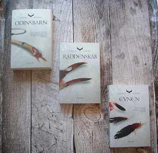
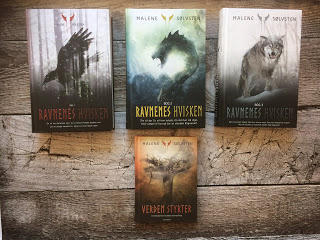
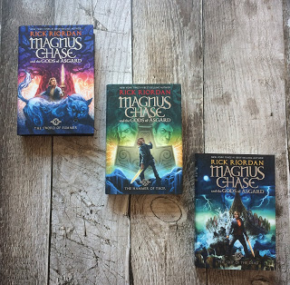
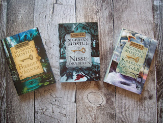
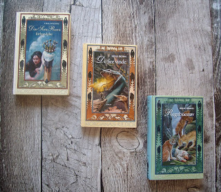
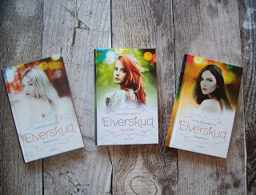
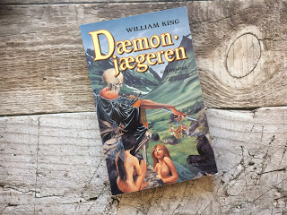
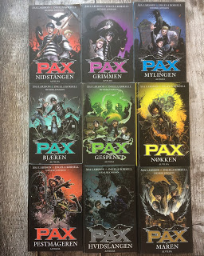

Top 10 Liste: Nordiske serier
I Top 10-Listerne vil vi give 10 anbefalinger til fantasylæsning, ud fra egen læsning.
Top 10 Listerne er ikke i prioriteret rækkefølge, hvor det bedste står øverst, men simpelthen 10 fantasyanbefalinger fra os til jer.
Rigtig god fornøjelse.
10 nordiskinspirerede fantasybøger/serier
Rigtig meget fantasy er inspireret af nordisk mytologi, folketro, sagn og sagnvæsener, og tendensen er kun vokset igennem de sidste år.
For mig, der er vokset op med historierne om Tor, Loke og de andre guder, elverfolk og trolde, er det både spændende og velkendt, når jeg støder på fantasy,
som læner sig op ad og låner inspiration fra noget, som ligger så dybt i den danske kultur, og herunder opremser jeg de 10 bøger/serier,
som har gjort mest indtryk på mig, og hvor den nordiske inspiration er fremtrædende.
I de tilfælde, hvor det drejer sig om serier, er reglen, at jeg skal have læst mindst tre bøger i serien, før den kan optræde på listen, ligesom en forfatter kun kan være repræsenteret en gang.
Listen er på ingen måde definitiv, og kan sagtens have ændret sig om nogle år, men lige nu er det altså sådan her, den ser ud.
Beskrivelsen stammer fra Goodreads, og vil, i de tilfælde, det drejer sig om serier, kun være af første bind. De bøger, der er anmeldt på bloggen, linker til anmeldelsen.

Siri Pettersen: Ravneringene
Som ung opdager Hirka, at hun er et odinsbarn – en haleløs råddenskab fra en anden verden. Foragtet. Frygtet. Og jaget.
Hun aner ikke længere, hvem hun er og er tilmed på flugt for sit liv. Men dette er kun begyndelsen.
Hirka er ikke den eneste råddenskab, der er kommet fra en anden verden, men måske den eneste, der ikke er kommet for at dræbe.
Selvom det tog noget tid for mig at komme igennem serien, så var jeg vild med universet og personerne.
Inspirationen fra nordisk mytologi er utroligt tydelig, samtidig med at universet formår at være helt sit eget.
De nordiske guder nævnes dog en del undervejs, ligesom navnene i især første bind klinger nordisk.
Derudover er der, som seriens navn antyder, en del nordiske symboler som f.eks. ravne med, ligesom folket i Ymslanda leder tankerne hen på trolde, med deres haler.

Malene Sølvsten: Ravnenes hvisken
17-årige Anne kan se hændelser i fortiden, og en nat genoplever hun et uhyggeligt gammelt mord.
En rødhåret pige bliver myrdet og får skåret et runetegn i ryggen. Men kort efter begynder rødhårede piger at blive dræbt på egnen, og tegnet er på dem alle.
Pludselig er den lille by fuld af fremmede. De har mystiske kræfter, og de kredser om Anne, som ikke er vant til at have folk tæt på.
Den asatroende Luna, den gudesmukke Mathias og den mystiske Varnar ønsker alle at hjælpe hende. Men er de venner eller fjender? Kan hun stole på sine følelser efter et helt liv alene?
En vil hun forelske sig i.
En vil blive hendes bedste ven.
En vil redde hendes liv.
Og en vil slå hende ihjel.
Malene Sølvstens trilogi blev et landsdækkende fænomen allerede fra udgivelsen af første bog, og som den eneste danske fantasyforfatter har hun formået at blive nomineret til Læsernes Bogpris.
Hun har været nomineret til og vundet flere priser for sine bøger, og det er fuldt fortjent, for serien er fantastisk.
Serien er tydeligt inspireret af nordisk mytologi og asatro, og både guder, sagnvæsener og sagn spiller en rolle undervejs.
Sølvsten formår at blande nordisk mytologi, krimi, magi og realisme sammen på en ret unik og meget spændende måde, og give nyt liv til de gamle historier.

Lars-Henrik Olsen: Erik Menneskesøn
Gudinden Idun og hendes livsæbler er blevet bortført af jætterne, og guderne er bed at miste deres styrke.
Erik bliver fra jorden hentet op til gudernes verden. Sammen med Tors datter Trud må og skal han finde Idun ... og forhindre Ragnarok.
Historien om drengen Erik, som møder de nordiske guder, er en af de helt store klassikere i dansk børnelitteratur,
og det er den første bog, jeg kan huske, hvor jeg stødte på den nordiske mytologi i historieform.
Første bind fik jeg læst højt i klassen, og siden slugte jeg resten af serien selv.
Olsen indfletter både gudesagnene fra den nordiske mytologi og nogle af de danske heltesagn i sin serie, og selvom første bind nok altid vil stå som det bedste for mig,
så er serien stadig en af de bedste inden for nordisk inspireret fantasy, og derfor fortjener den en plads på denne liste.

Rick Riordan: Magnus Chase og de nordiske guder
Magnus Chase har ikke haft det for let.
Siden en forfærdelig nat for to år siden, da hans mor sagde, at han skulle løbe for livet, har han levet alene på gaden i Boston på flugt fra politiet og myndighederne.
Men også andre er på jagt efter Magnus: Hans onkel Randolph, som hans mor altid har advaret ham imod.
Da Magnus falder i onklens baghold, fabler Randolph løs om nordiske guder og et fantastisk sværd, som har været tabt i tusindvis af år, men som retmæssigt tilhører Magnus.
Historier om Asgårds guder, ulve og Ragnarok bobler op i Magnus’ hukommelse.
Men i samme øjeblik bliver byen angrebet af et ildmonster, som tvinger ham til at vælge mellem at redde sig selv eller hundredevis af uskyldige mennesker.
Nogle gange er døden den bedste start på et nyt liv ...
Det er ingen hemmelighed, at jeg er ret glad for Rick Riordans måde at genfortolke verdens mytologier på,
og hans fortolkning af historierne og guderne fra den nordiske mytologi er da også utroligt underholdende.
Riordan slipper rigtig godt fra opgaven, og selvom ikke alt klinger lige nordisk, så er der ingen tvivl om, at han har lavet sin research.
Og humoren fejler heller ikke noget. Selvom jeg har læst trilogien på engelsk,
og anmeldelserne er af de engelske udgaver, så har jeg valgt at bruge de danske titler på denne liste, for helhedsindtrykkets skyld.

Sigbjørn Mostue: Alfetegnet
I sommerferien tager Espen op til sin morfars gård sammen med sin mor.
Men morfar er begyndt at ´vrøvle lidt´, og det er nu Espens onkel, der driver gården. Til morfarens voldsomme protester vil Sven til at fælde Gammelskoven.
Efter et lynnedslag finder Espen en meget speciel nøgle i skoven.
Nøglen fører Espen til en ny verden: en parallel virkelighed, hvor omgivelserne er de samme, men hvor træer, dyr og fugle kan snakke, og hvor nisser, alfer, turser og genfærd dukker op.
Men farer truer. Hvis skoven fældes, vil alferne være forsvarsløse, og selveste Gravbøjgen vil udrydde dem.
De har valgt Espen til at kæmpe for sig, men Espen vægrer sig.
Han har altid gået uden om problemerne. Men det, de onde magter ikke ved, er, at der også står en pige bag ham: Eva.
Trilogien Alfetegnet er, i modsætning til de forrige serier på listen, ikke direkte inspireret af nordisk mytologi, men i stedet af nordiske sagnvæsener som nisser, genfærd og alfer.
Mostue viser, at ikke alle sagnvæsener er lige hyggelige og rare, og formår at gøre mørket i historierne tydeligt for læseren.
Serien er letlæst, velskrevet og spændende, og sørgeligt undervurderet herhjemme.

Helle Ryding: Morganas kilder
Hvorfor har Elisa kræfter, hun ikke selv kan styre?
Hvordan kan det være, hun altid ved, hvordan alle stjerner og planeter står på himlen?
Og hvorfor vokser hendes hår hurtigere end alle andres?
12-årige Elisa er ikke som andre mennesker. Da hun var spæd, efterlod hendes mor hende i en kurv foran herregården Svaneborg.
Moderen forsvandt, og det samme gjorde et brev, der fortalte om en frygtelig forbandelse.
Nu dukker det gamle brev pludselig op og forandrer Elisas trygge tilværelse på Svaneborg.
Samtidig flytter en mærkelig gæst med en høg ind på herregården, og en nat lokkes Elisa til at ride ud i Ellemosen, hvor mosefolket og svartalfer venter på hende i det bundløse mudder.
Hvad sker der med hende? Hvem er hun egentlig, og hvor kommer hun fra? I sin søgen efter sandheden om sig selv må Elisa helt ud til et sted, hvor regnbuen ender.
Selvom det efterhånden er nogle år siden, jeg læste denne trilogi, så står den stadig for mig som noget helt særligt.
I denne serie er det igen de nordiske sagnvæsener, der er i centrum, og undervejs møder Elisa både de gode og de mindre gode af de overnaturlige.
I serien møder vi både elvere, alfer og mosefolk, såvel som flere andre kendte skikkelser, og Ryding formår at give såvel væsener som sagn nyt liv.

Nicole Boyle Rødtnes: Elverskud
Birke og hendes to søstre danser en gang om måneden for byens borgere. Ikke af lyst, men for at overleve. De er af elverblod.
De har det fra deres mor, der forelskede sig i et menneske og døde under fødslen. Siden da har deres far gjort alt for at give dem et så almindeligt liv som muligt.
Men helt almindelig bliver man aldrig, når man er gennemsigtig i ryggen og med et forkert blik kan drive en fyr til vanvid ...
Nicole Boyle Rødtnes er en af mine absolutte yndlingsforfattere, og hendes fortolkning af elverfolket viser tydeligt dobbeltheden forbundet med disse sagnvæsener.
På den ene side gudesmukke piger, på den anden side er de nødt til at suge livskraft gennem dans, for at leve.
Det er mørke, tragedie og kærlighed, der driver elverpigerne her, og mødet med menneskene ender sjældent lykkeligt.

Joanne Harris: Runemærker
Maddy lever i en verden, hvor det er en synd at drømme. Hun er mærket af en rune, og har et talent for magi som vækkes af en en-øjet vandringsmand.
Joanne Harris er englænder, og nok mest kendt for sine voksenromaner, men hun har også skrevet en enkelt fantasyserie for børn - med en tilhørende spin of-serie for voksne.
Inspirationen fra såvel den nordiske mytologi som de nordiske sagnvæsener er tydelig i serien, hvor der både indgår runer, nisser og nordiske guder undervejs,
og man kan tydeligt mærke, at Harris har lavet sin research, før hun skrev bogen.
Desværre er det kun første bind, der er blevet oversat til dansk, men det skal bestemt ikke afholde en fra at læse den, for den er rigtig god.

William King: Dæmondræberen
Hvide Ulv frigør i vikingetiden en ond dæmon fra en klippegrotte. Dæmonen dræber hans bror og han flygter for livet ...
Jæger-Rolf redder ham og jagten på dæmonen starter ...
Den eneste selvstændige bog på denne liste tilhører den mørke del af fantasygenren, og William King formår at skabe en ret creepy stemning, som følger læseren igennem hele bogen.
De nordiske guder spiller en stor rolle undervejs, ligesom forskellige mørke sagnvæsner dukker op i historien.
Bogen er nok ikke så kendt idag, da den har en del år på bagen efterhånden, men kan man lide mørk fantasy, hensat til vikingetiden, er den bestemt værd at læse.

Åsa Larsson, Ingela Korsell og Henrik Jonsson: PAX
"Tiden pulserer - og mørket vandrer ind."
Der sker mærkelige ting i den lille by Mariefred. Overnaturlige væsner vækkes til live. Brødrene Alrik og Viggo bliver udvalgt til at beskytte det hemmelige bibliotek under kirken.
De gamle vogtere mener, at brødrene er for unge – så de arrangerer en højst usædvanlig prøve, hvor Alrik og Viggo skal være både modige og tænke hurtigt, hvis de vil overleve.
Og oven i det hele er der krig i skolegården, hvor Simon og hans slæng tror, de skal bestemme det hele...
Sidste serie på listen hører også til i den mørke ende af spektret.
Forfatterne og illustratoren inddrager sagnvæsener, monstre og sort magi fra den nordiske sagnverden, og udover at være enormt creepy, formår serien også at være hurtigt læst, spændende og, til tider, ret sjov.
Bøgerne er fyldt med illustrationer, som er med til at fortælle historien, og illustrationerne fanger stemningen i bøgerne, og den nordiske sagnverden, perfekt.
Her er nordisk mørke for alle pengene, og samtidig lærer læseren flere af de mere obskure og farlige sagnvæsener at kende undervejs.
Jeg har desværre ikke fået læst serien færdig endnu, men det skal nok komme, for jeg har været ret vild med serien indtil nu.